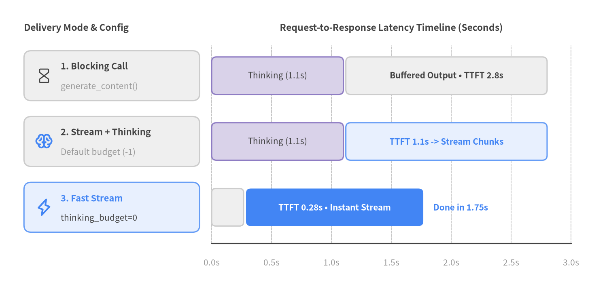
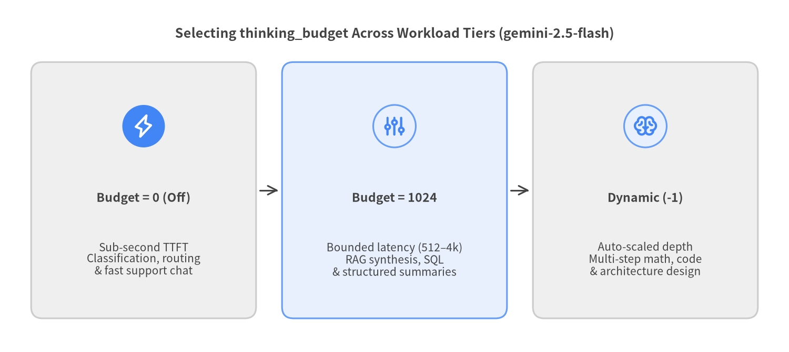

03. Streaming Delivery & ThinkingConfig Control
Interactive AI applications optimize perceived responsiveness along two independent axes: streaming delivery (generate_content_stream) cuts Time To First Token (TTFT) by yielding output chunks as soon as generation starts, while types.ThinkingConfig(thinking_budget=...) right-sizes internal reasoning tokens to match each task's complexity.
Combining progressive streaming with an explicit thinking budget turns multi-second blocking calls into sub-second interactive experiences—reserving deep chain-of-thought compute strictly for tasks that need it.

View Drawlib Python Code
from drawlib.canvas import save, setup
from drawlib.icons import phosphor
from drawlib.lines import line
from drawlib.shapes import rectangle
from drawlib.styles import Styles
from drawlib.text import text
setup(width=152, height=74, dpi=150)
# Header labels
text((6.0, 67.0), "Delivery Mode & Config", style=Styles.DarkBold.patch(text_size=11.0, halign="left"))
text(
(98.0, 67.0),
"Request-to-Response Latency Timeline (Seconds)",
style=Styles.DarkBold.patch(text_size=11.0),
)
# Vertical timeline gridlines (0.0s to 3.0s -> x = 53.0 to 143.0, 30 units/sec)
for i in range(7):
tx = 53.0 + i * 15.0
sec = i * 0.5
line((tx, 13.0), (tx, 62.5), style=Styles.MutedDashedThin)
text((tx, 8.2), f"{sec:.1f}s", style=Styles.Muted.patch(text_size=10.0))
line((53.0, 13.0), (143.0, 13.0), style=Styles.Dark)
# Row 1: Blocking generate_content()
rectangle((28.0, 55.0), width=44.0, height=12.5, style=Styles.Neutral.patch(shape_r=1.8))
phosphor.hourglass((11.0, 55.0), width=4.4, style=Styles.Dark)
text((15.2, 57.3), "1. Blocking Call", style=Styles.DarkBold.patch(text_size=10.5, halign="left"))
text((15.2, 52.3), "generate_content()", style=Styles.Muted.patch(text_size=10.0, halign="left"))
rectangle(
(69.5, 55.0),
width=33.0,
height=9.4,
style=Styles.SecondaryNeutral.patch(shape_r=1.2),
text="Thinking (1.1s)",
text_style=Styles.Dark.patch(text_size=10.0),
)
rectangle(
(111.8, 55.0),
width=50.4,
height=9.4,
style=Styles.Neutral.patch(shape_r=1.2),
text="Buffered Output • TTFT 2.8s",
text_style=Styles.DarkBold.patch(text_size=10.0),
)
# Row 2: Streaming + Default Thinking
rectangle((28.0, 38.5), width=44.0, height=12.5, style=Styles.Neutral.patch(shape_r=1.8))
phosphor.brain((11.0, 38.5), width=4.4, style=Styles.PrimaryBold)
text((15.2, 40.8), "2. Stream + Thinking", style=Styles.DarkBold.patch(text_size=10.5, halign="left"))
text((15.2, 35.8), "Default budget (-1)", style=Styles.Muted.patch(text_size=10.0, halign="left"))
rectangle(
(69.5, 38.5),
width=33.0,
height=9.4,
style=Styles.SecondaryNeutral.patch(shape_r=1.2),
text="Thinking (1.1s)",
text_style=Styles.Dark.patch(text_size=10.0),
)
rectangle(
(111.8, 38.5),
width=50.4,
height=9.4,
style=Styles.PrimaryNeutral.patch(shape_r=1.2),
text="TTFT 1.1s -> Stream Chunks",
text_style=Styles.PrimaryBold.patch(text_size=10.0),
)
# Row 3: Streaming + thinking_budget=0 (Focal Hero)
rectangle((28.0, 22.0), width=44.0, height=12.5, style=Styles.PrimaryNeutral.patch(shape_r=1.8))
phosphor.lightning((11.0, 22.0), width=4.4, style=Styles.PrimaryBold)
text((15.2, 24.3), "3. Fast Stream", style=Styles.PrimaryBold.patch(text_size=10.5, halign="left"))
text((15.2, 19.3), "thinking_budget=0", style=Styles.Dark.patch(text_size=10.0, halign="left"))
rectangle((57.0, 22.0), width=8.0, height=9.4, style=Styles.Neutral.patch(shape_r=1.0))
rectangle(
(83.8, 22.0),
width=44.4,
height=9.4,
style=Styles.PrimaryFlat.patch(shape_r=1.2),
text="TTFT 0.28s • Instant Stream",
text_style=Styles.WhiteBold.patch(text_size=10.0),
)
text((108.5, 22.0), "Done in 1.75s", style=Styles.PrimaryBold.patch(text_size=10.0, halign="left"))
save()
1. 3-Line Client Setup & Progressive Streaming (generate_content_stream)
Start by initializing the unified genai.Client with your GEMINI_API_KEY stored in Google Colab Secrets (🔑 Secrets in the left sidebar):
!pip install -q drawlib google-genai pydantic
from google.colab import userdata
from google import genai
client = genai.Client(api_key=userdata.get("GEMINI_API_KEY"))
Whereas client.models.generate_content() buffers the entire completion on the server before returning, client.models.generate_content_stream() yields GenerateContentResponse chunks over an HTTP stream as soon as tokens are decoded. Measuring both ttft_ms (time until the first non-empty chunk.text arrives) and total_ms with time.perf_counter() quantifies how quickly users see the response start:
import time
t0 = time.perf_counter()
ttft_ms = None
for chunk in client.models.generate_content_stream(
model="gemini-2.5-flash",
contents="List 4 practical latency optimization techniques for LLM APIs, one bullet per line.",
):
if chunk.text:
if ttft_ms is None:
ttft_ms = (time.perf_counter() - t0) * 1000
print(chunk.text, end="", flush=True)
total_ms = (time.perf_counter() - t0) * 1000
print(f"\n\nTTFT: {ttft_ms:.0f} ms | Total: {total_ms:.0f} ms")
Note: Always guard
if chunk.text:before printing or recordingttft_ms. Early or trailing stream frames (such as metadata-only chunks) can carry empty text payloads while updatingusage_metadata.
2. Right-Sizing Reasoning with ThinkingConfig (thinking_budget)
gemini-2.5-flash is a hybrid reasoning model: before emitting visible output tokens, it can spend internal thinking tokens planning and verifying its answer. Because thinking runs before the first visible output token is emitted, controlling types.ThinkingConfig(thinking_budget=...) directly governs TTFT and token cost:
thinking_budget=0(Reasoning Off): Disables internal thinking ongemini-2.5-flashfor sub-second TTFT on intent classification, entity extraction, routing, and conversational support chat.thinking_budget=1024(Predictable Cap,512–4096): Allocates a bounded token ceiling so moderately complex summarization, RAG synthesis, and SQL drafting gain structured reasoning with predictable p95 latency and cost.- Dynamic Default (
thinking_budget=-1or omitted): Lets the model automatically scale reasoning depth based on prompt difficulty—ideal for multi-step math, algorithm generation, and architectural trade-off analysis.

View Drawlib Python Code
from drawlib.canvas import save, setup
from drawlib.icons import phosphor
from drawlib.smartarts import CardList
from drawlib.styles import Styles
from drawlib.text import text
setup(width=152, height=68, dpi=150)
text(
(76.0, 61.5),
"Selecting thinking_budget Across Workload Tiers (gemini-2.5-flash)",
style=Styles.DarkBold.patch(text_size=12.0),
)
tiers = CardList(
style=Styles.Neutral,
text_style=Styles.DarkBold.patch(text_size=11.0),
description_style=Styles.Dark.patch(text_size=10.0),
badge_shape="circle",
badge_style=Styles.PrimaryNeutral,
icon_style=Styles.PrimaryBold,
direction="horizontal",
show_arrows=True,
arrow_style=Styles.Dark,
spacing=5.0,
)
tiers.add(
"Budget = 0 (Off)",
"Sub-second TTFT\nClassification, routing\n& fast support chat",
icon=phosphor.lightning,
badge_style=Styles.PrimaryFlat,
icon_style=Styles.WhiteBold,
)
tiers.add(
"Budget = 1024",
"Bounded latency (512–4k)\nRAG synthesis, SQL\n& structured summaries",
icon=phosphor.sliders,
style=Styles.PrimaryNeutral,
)
tiers.add(
"Dynamic (-1)",
"Auto-scaled depth\nMulti-step math, code\n& architecture design",
icon=phosphor.brain,
)
tiers.draw(xy=(6.0, 6.5), width=140.0, height=49.5, align="bottom_left")
save()
Benchmarking thinking_budget=0 vs. thinking_budget=1024
Let's run the exact same quantitative prompt under thinking_budget=0 and thinking_budget=1024, capturing ttft_ms, total_ms, internal thoughts_token_count, and visible candidates_token_count from the stream's usage_metadata:
from google.genai import types
prompt = (
"A service handles 120 req/s. Cache hits (70%) take 8 ms; "
"cache misses (30%) call Gemini taking 420 ms. Compute weighted average latency in ms."
)
results = {}
for label, budget in [("Budget 0 (Off)", 0), ("Budget 1024 (Capped)", 1024)]:
t0 = time.perf_counter()
ttft_ms = None
usage = None
for chunk in client.models.generate_content_stream(
model="gemini-2.5-flash",
contents=prompt,
config=types.GenerateContentConfig(
thinking_config=types.ThinkingConfig(thinking_budget=budget),
),
):
if chunk.text and ttft_ms is None:
ttft_ms = (time.perf_counter() - t0) * 1000
if chunk.usage_metadata is not None:
usage = chunk.usage_metadata
total_ms = (time.perf_counter() - t0) * 1000
thoughts_tokens = getattr(usage, "thoughts_token_count", 0) or 0
candidates_tokens = getattr(usage, "candidates_token_count", 0) or 0
results[label] = {
"ttft_ms": round(ttft_ms or total_ms, 1),
"total_ms": round(total_ms, 1),
"thoughts_token_count": thoughts_tokens,
"candidates_token_count": candidates_tokens,
}
print(f"{label}: {results[label]}")
Visualizing Measured Latency & Token Footprint in Colab
Because Drawlib renders directly inline inside Jupyter and Google Colab cells (setup(..., cwd=True) + show()), we can plot results right inside the notebook using BarChart:
from drawlib.canvas import setup, show
from drawlib.charts.bar import BarChart
from drawlib.styles import Styles
setup(width=116, height=56, cwd=True)
metrics = ["ttft_ms", "total_ms", "thoughts_token_count", "candidates_token_count"]
chart = BarChart(
axis_line_style=Styles.MutedDashed,
categories=["TTFT (ms)", "Total (ms)", "Thoughts Tok", "Output Tok"],
width=98.0,
height=38.0,
title="Latency & Token Footprint: Budget 0 vs. Budget 1024",
title_style=Styles.BlackBold.patch(text_size=11.5),
bar_mode="group",
bar_width_ratio=0.68,
bar_r=0.9,
axis_text_style=Styles.Muted.patch(text_size=10.0),
grid_style=Styles.MutedThin,
value_text_style=Styles.DarkBold.patch(text_size=10.0),
value_format="{:.0f}",
)
chart.add_series(
"Budget 0 (Off)",
[results["Budget 0 (Off)"][m] for m in metrics],
style=Styles.PrimaryFlat,
)
chart.add_series(
"Budget 1024 (Capped)",
[results["Budget 1024 (Capped)"][m] for m in metrics],
style=Styles.SecondaryNeutral,
)
chart.draw(xy=(9.0, 12.0))
chart.draw_legend(
xy=(28.0, 5.5),
text_style=Styles.DarkBold.patch(text_size=10.0),
orientation="horizontal",
)
show()
Key Takeaways
- Stream User-Facing Text (
generate_content_stream): Eliminates full-response buffering so users read the opening sentence immediately after reasoning finishes. - Match
thinking_budgetto Route SLAs: Setthinking_budget=0on latency-critical routers and classifiers, cap mid-tier workflows (512–4096), and keep-1(dynamic) for complex analytical reasoning. - Inspect
thoughts_token_count: Monitorresponse.usage_metadata.thoughts_token_countalongsidecandidates_token_countto track reasoning token utilization in production.